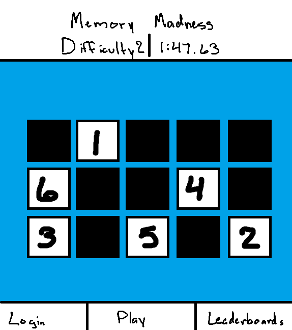

Memory madness is a memory game in which you memorize the order of a set of buttons, and repeat the order back. There are many difficulty options to choose from from a 2x5 grid to a 5x5.
The name Memory Madness is something that I just made up and is not tied to any existing corporate trademark. It is a very cheesy name and will likely be subject to change as of whenever I feel like it.